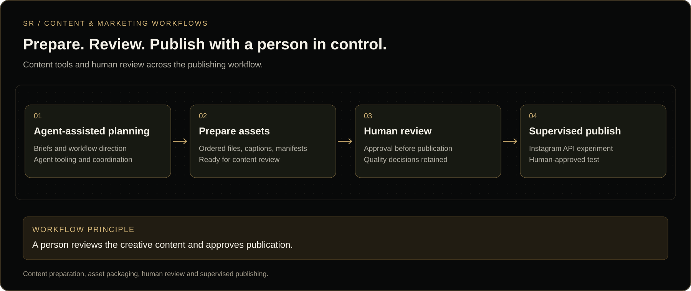

Case studies / 03
Case study 03 · Independent project
AI Content & Marketing Automation
A workflow for planning social content, preparing assets and captions, collecting human approval, and publishing approved posts. The work combines agent tooling, a dashboard prototype, content-packaging code, and supervised publishing experiments.
In plain English
Social content takes more than generating a picture. Files and captions need to be packaged, checked, approved, and sent to the right account. This project explored tools for managing those steps while keeping a person in control of publication.
My role
Workflow definition, agent coordination, AI-assisted implementation, review, troubleshooting, and decisions about which content could be published. This page describes content operations and publishing experiments; it does not claim campaign revenue or sales results.
From content preparation to publication

What the evidence shows
| Component | Evidence reviewed | What it does not establish |
|---|---|---|
| Content packaging | Archived implementation records describe single-image and carousel packages containing ordered images, captions and an export manifest, written to a staging area. | The export step did not publish content. Original code and tests were not re-run in this audit. |
| Human-approved publishing | A September 2026 publisher record documents a supervised Instagram API publish and verification. The example was later withdrawn after quality review. | A currently live post, uninterrupted operation, or unattended campaign publishing. |
| Command-center dashboard | The project handoff describes a clickable prototype with navigation, in-memory state and per-part Claude threads in its design environment. | A fully connected production dashboard. Most metrics and action buttons used mock data; state did not persist. |
| Marketing and e-commerce outcomes | Content-production and publishing work, plus a planned product-marketing direction. | Measured conversion uplift, revenue, ROAS, or a deployed TikTok Shop integration. |
Tools and their roles
Tool experience and a completed integration are different claims. The roles below separate the project records from hands-on experience reported by Sebastian.
| Tool | Role | Status |
|---|---|---|
| Hermes | Agent runtime and workflow coordination context; dashboard design around its operations. | Documented project context and self-reported hands-on use. Direct dashboard-to-runtime control was not established by the reviewed prototype. |
| OpenClaw | Earlier agent-tooling experience. | Self-reported hands-on use. Not presented as the publisher implementation verified in this audit. |
| Higgsfield and creative API tooling | Image-generation tooling referenced in the content-workflow records. | Documented tooling; a complete live generation-to-publish flow was not re-tested here. |
| Instagram API | Supervised publishing of approved content. | Archived publish/verification record reviewed; example later withdrawn. No new publishing performed for this audit. |
| Python and manifests | Asset packaging, ordered exports and record keeping. | Archived implementation and test records reviewed. |
Planned expansion: TikTok Shop marketing
The intended pivot was to adapt this content workflow to product-focused marketing and e-commerce campaigns. Product briefs, creative assets, captions and human review would support content made around products.
Planned TikTok Shop API integration, product-catalog connections, campaign publishing and conversion measurement are not claimed as implemented. They would require platform integration work and validation.
Audit limits and next evidence
This page is based on a July 2026 project handoff, archived export implementation/test records, and a September 2026 publisher record. Those records support historical development and a supervised experiment, not present-day operational status.
The next audit step is to inspect the original repository and manifests, run tests without live publishing or generation spend, and compare implementation against the archived records. Private account names, endpoints, creator content and credentials are omitted.